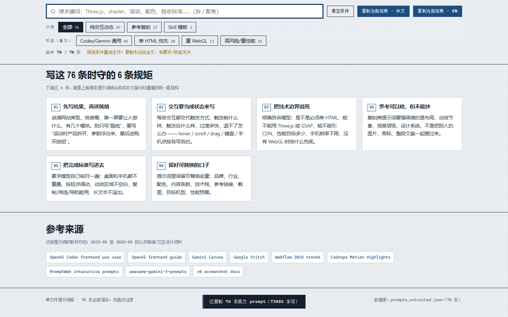
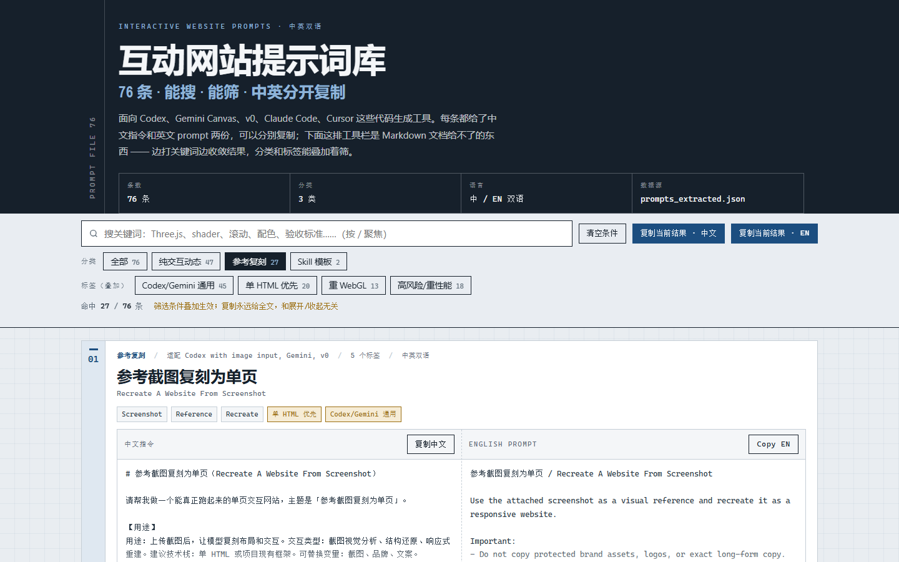
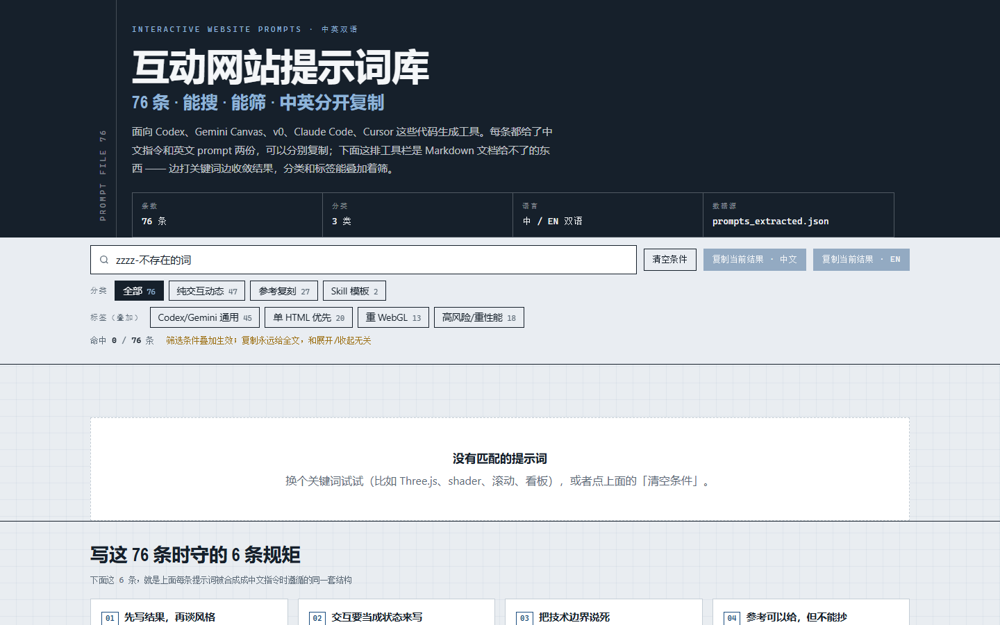
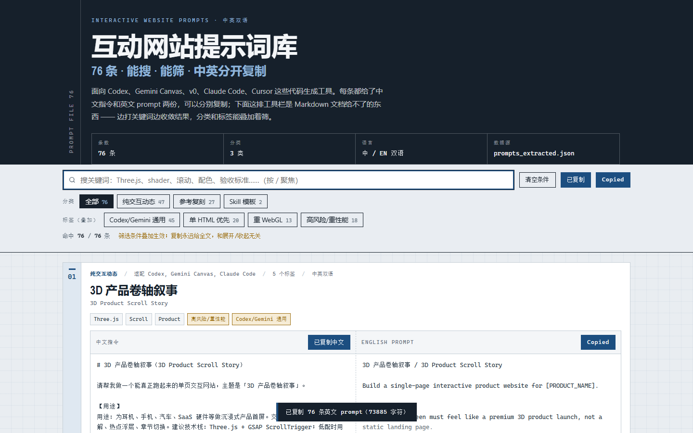
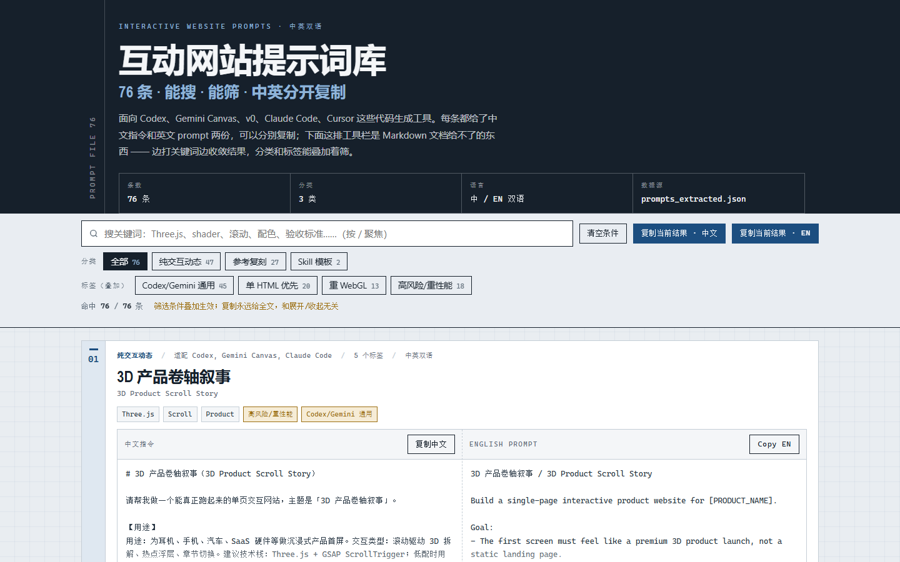
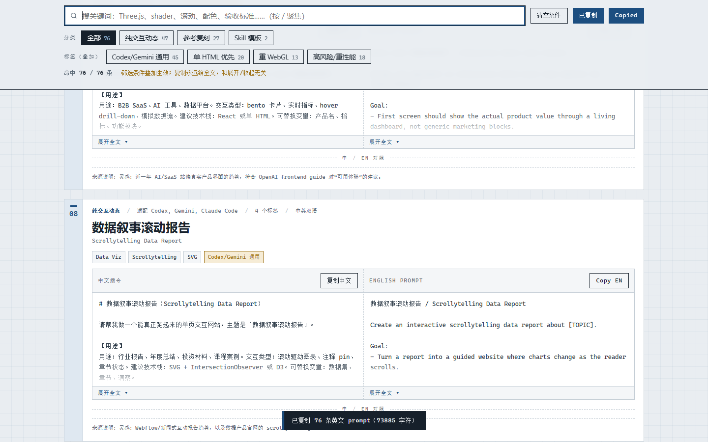
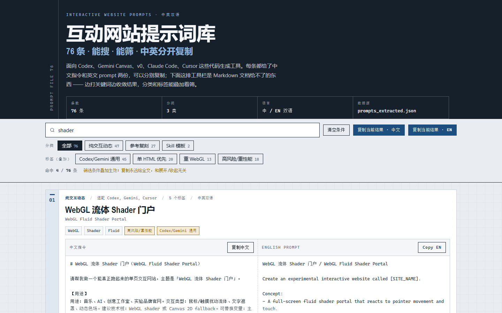
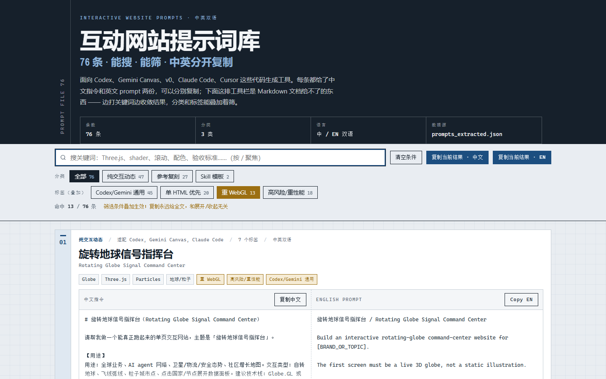
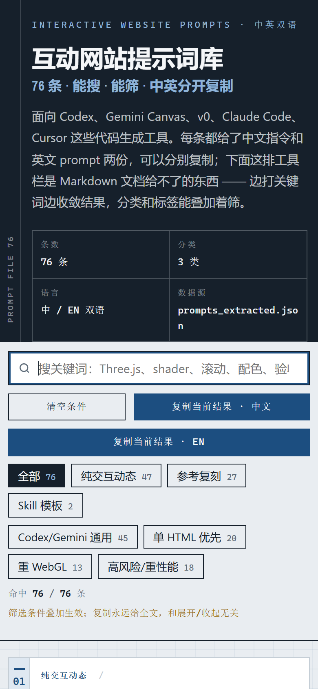
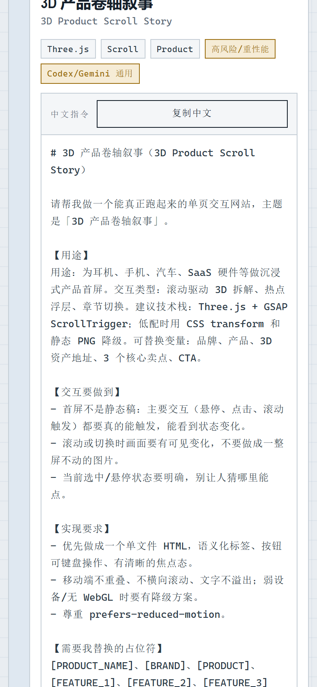

这个痛点，是不是你
痛点卡 · 案例编程-09 交互提示词库（编程网页 / CodexAI）
依据：子Agent执行规范.md 第〇节「痛点先行」+ 〇补「痛点提取细则」
出处：案例清单.md编程-09 条目（所属材料 M6 =网站提示词【…】\interactive-website-prompts.html）
素材：成品interactive-website-prompts.html（170,277 B）+ 已提取数据tmp_conv\prompts_extracted.json（76 条）
一、痛点原句（引用材料原文）
位置1 · 成品页面的自述（原 <p class="subtitle">，逐字）：
「面向 Codex、Gemini、v0、Claude Code、Cursor 等代码生成工具的中英双语 prompt。内容不是逐条搬运推特原文，而是根据 X、Codrops、Awwwards、Three.js、Globe.GL 等近一年热门交互形式做原创改写。」
位置2 · 成品页面统计行的自述（逐字）：
「提示：每条都可分别复制中文提示词或英文 prompt。」
位置3 · 案例清单给出的痛点定位（编程-09 条目）：
原文（页面自述）「面向 Codex、Gemini、v0、Claude Code、Cursor 等代码生成工具的中英双语 prompt」「每条都可分别复制中文提示词或英文 prompt」补全：收了 76 条提示词，散在文档里不好用——要搜、要按类筛、要一键复制中/英，用 Markdown 文档做不到。真正想要的是"一个能搜能复制的小工具页"。
位置4 · 领域总纲（M5 结束语）：
「作品比简历更快说话。先做出一个能被别人打开的东西。」
「不要在旧赛道卷速度…把"效率"误当成"机会"」
二、痛点主体
- 谁：攒了一批提示词、想拿它们当"工具箱"用的人——本案例具体化为把这 76 条交互网站提示词整理成库的人（做内容/做课/做社群资料，写文档可以，但不会做小工具）。
- 场景：76 条中英双语提示词，每条带分类、适配模型、标签、来源说明。要在真写代码的时候边写边查——不是"读一遍收藏起来"，是"现在要做一个滚动叙事页，把那一条捞出来粘进去"。
- 交付对象：自己高频用 + 发给同组的人一起用。
三、旧做法的代价（绑定时长 / 动作量）
| 旧做法 | 具体代价（可核算） | ||
|---|---|---|---|
| 放在 Markdown / 文档里 | 76 条 × 中英两份 = 152 段长文本。找"哪条是滚动叙事的"只能 Ctrl+F 一个个试词；文档里没法"只看这一类"，也没有"复制这一段"的按钮——只能拖鼠标从标题拖到段尾，76 条里挑错一次就白选。 | ||
| 复制中/英要来回切 | 中文那份是给"我想说人话"的时候用，英文那份是给"我要喂给 Codex"的时候用。散在文档里就是上下两段，很容易复制错一份。 | ||
| 原成品自身的缺陷（实测） | 原页面虽然已经是个工具页，但它只渲染 55 / 76 条（脚本实测：hiddenReferenceTitles 里有 21 个标题命中数据源）——收藏进来的 21 条「参考复刻」被隐式藏掉了，搜不到、复制不到。"收了却用不上"是这个案例最具体的一层痛点。 | ||
| 原成品的另一处缺陷（实测） | 分类与标签混在同一条 tab 里（判定条件 `item.category === activeTab \ | \ | item.tags.includes(activeTab)`）。点"重 WebGL"和点"参考复刻"看起来是同一个动作，语义不清；也无法"在某一类里再按标签收窄"。 |
真正想要的结果：一个 HTML 文件，打开就能边打字边收敛、分类和标签能叠着筛、每条能分别复制中文或英文——不用配环境、不用联网、不用登录。
四、想要的目标（做到什么程度算"解决好"）
- 能搜：输一个词（
Three.js/shader/ 看板 / 验收标准）立刻收敛，命中数实时显示。 - 能按类筛：3 个分类（纯交互动态 / 参考复刻 / Skill 模板）单选收敛。
- 能叠加筛：4 个高频标签（Codex/Gemini 通用、单 HTML 优先、重 WebGL、高风险/重性能）多选取交集，能和分类叠着用。
- 中英分别可复制：每条两个按钮，复制中文给一份完整可交付的指令（不只是那段摘要），复制英文给英文原文 + 标题。
- 76 条齐全：不做隐式过滤——收了就都要能搜到、能复制到。
- 移动端可用：390px 能读、不横向滚动。
五、【补全】
【补全】案例清单点出了"要搜、要筛、要一键复制"，但没讲透"为什么值得解决"，这里补三句：
- 提示词库的价值不在"存了多少条"，在"要用的时候捞得出来"。 152 段长文本躺在文档里，它是一份"资料"；能搜、能叠筛、能一键复制，它才是一个"工具"。这一步之差，决定了你写代码时会不会真的去用它——不会去用，收 76 条和收 7 条没区别。
- "复制中文"必须是合成出来的，不能是"顺手搬一段摘要"。 实测发现两件事：①
promptZh（用途摘要）长度 min 50 / 中位 84 / max 154 字符，而promptEn（英文原文）是 min 63 / 中位 826 / max 2051 字符——中文那份只有英文的十分之一长，它只是"用途摘要"，不是"能交出去的指令"；② 英文原文里 29 条含Acceptance/验收段落、74 条含[PLACEHOLDER]占位符。如果"复制中文"只给那 84 字符，用户拿到手还得自己补"要做到什么程度""哪里要替换"——复制这件事就只完成了一半。所以本案例的中文那份是把结构化字段合成成一份五段式完整指令（用途 / 交互要做到 / 实现要求与降级 / 需替换的占位符 / 验收标准），这五段正好对上原成品页面自己列的那 6 条"格式要求"。 - "藏掉一批"是最隐蔽的一种失效。 原成品藏 21 条大概是有理由的（"参考复刻"类可能被认为不够原创），但它藏的方式是静默的：用户不知道有 21 条不存在。一个库最不该做的事，就是让用户以为自己看到了全部。 所以复刻把"76 条全渲染"列成第一条要修的东西。
六、价值归类
✅ 目标导向：用户要的是"写代码的时候能立刻捞出对的那一条，并且粘得进对话框"（结果导向）→ 所以做的是搜索 + 叠筛 + 精确复制，而不是"整理得更整齐的文档"。 ❌ 非"工具理性"：不是"我有一份 76 条的文档所以找个网站把它贴上去"。工具理性的陷阱在这里非常具体——去纠结"要不要做个后端""要不要上数据库""用什么框架"，而真正该先回答的是"我要捞得多快、捞出来能不能直接用"。
七、跨章线索
- 回扣第01章总纲（问答式 AI vs 能执行干活的 AI）：这里 AI 不是陪你讨论"这个库该怎么分类"，而是把 76 条灌进去、把搜索和复制真的做出来。
- 呼应 M5「作品比简历更快说话」+「选一个发布——把输出放到真实环境里，反馈才会出现」：一个单文件工具页，比一份 Markdown 更容易被发出去、被真的用起来。
- 呼应编程-12 交付自检（M4 P15 六条）：本案例验收点里的"手机可读 / 交互完整 / 内容真实 / 能打开"就是那六条的落地。
AI 是怎么解决的
产物 · 可直接交互
在框内直接交互，或点"新窗口打开"占满浏览器体验完整版。
质检图
构建自核验截图，点击查看原图








